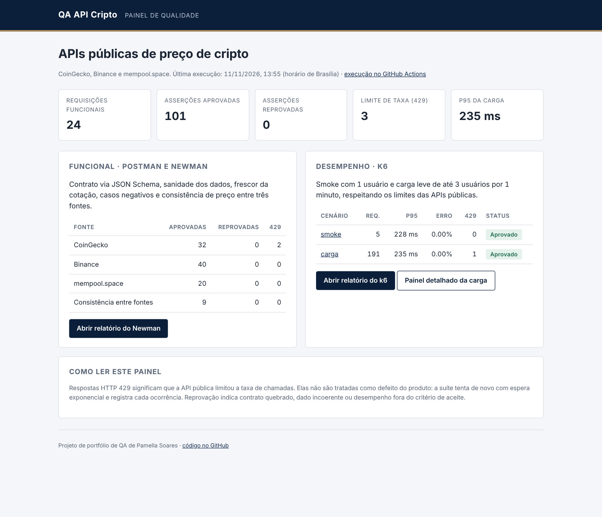
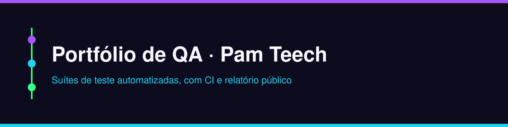
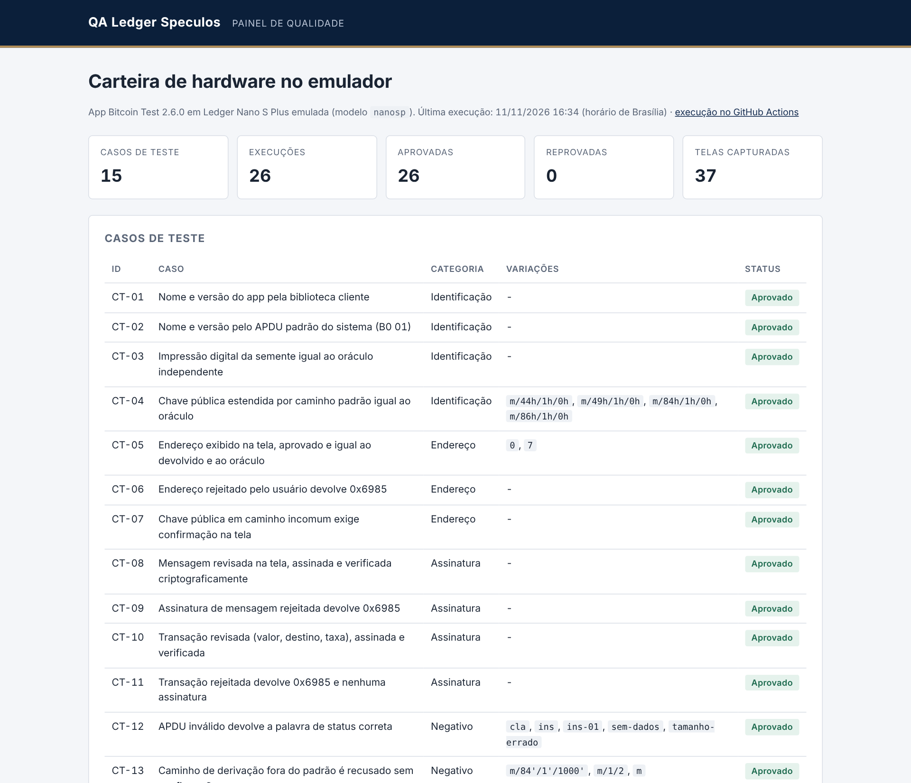

qa-api-cripto
Contrato, sanidade de dados e desempenho de APIs públicas de cripto (CoinGecko, Binance e mempool.space), com Postman, Newman e k6.

Suítes de teste automatizadas da Pam Teech, com CI e relatório público. Cada suíte vive no próprio repositório.

Contrato, sanidade de dados e desempenho de APIs públicas de cripto (CoinGecko, Binance e mempool.space), com Postman, Newman e k6.

Carteira de hardware Ledger Nano S Plus no emulador Speculos: tela, botões, APDU e assinaturas verificadas com pytest.